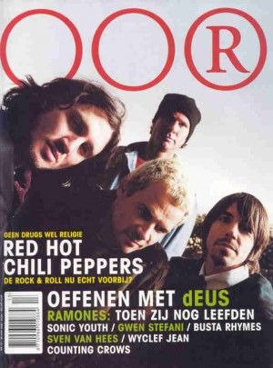
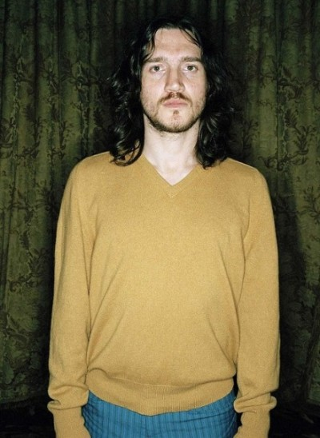
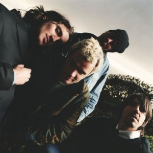
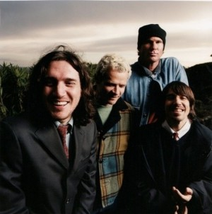

Były gitarzysta RHCP John Frusciante (AKA Trickfinger) nie jest zainteresowany występami. Człowiek, który urzekał tłumy „Zdrowszy, szczęśliwszy, bardziej efektywny, spokojniejszy, nie piję raczej dużo” – cynicznie śpiewał Tom York. Te słowa, z wyjątkiem „raczej dużo” i „cynizmu” często powtarzają się w czasie rozmowy z Flea i Johnem Frusciante z RHCP. Nowa płyta „By the Way” w założeniach wydaje się kontynuacją ballad z „Californication”, i jak mówią same Papryczki, jest wynikiem pragnienia bycia wrażliwszymi,słuchania swojego wewnętrznego głosu i rozwoju osobistego. Czy rzeczywiście Chili Peppers wyrośli z rock`and rolla?
Jesteśmy w Santa Monica, jest 5 maja 2002 roku, godzina 22.00. Zdenerwowana kobieta z wytwórni płytowej przygotowuje się do włączenia płyty z nowymi piosenkami 
{kind=link}
Nie możecie sobie wyobrazić wyraźniejszego kontrastu, niż ten między nastrojem otoczenia, a nastrojem członków RHCP. Póki co nerwowi Amerykanie, przeklinający cały świat dominują. Pamiętacie teledysk w którym Pepersi mkną przez pustynię, beztrosko rozwaleni na siedzeniach kabrioletu, napawając się pięknem i spokojem przyrody? W pewnym stopniu ten nastrój towarzyszy także odsłuchiwaniu nowego albumu. Weźmy chociażby „Zephyr Song” – refleksyjną piosenkę o miłości z wybitnymi jak zawsze gitarowymi riffami Johna Frusciante i przepięknymi wokalami Kiedisa oraz Frusciante, kojarzącą się nieco ze stylem The Beatles. Producentowi Rickowi Rubinowi tak spodobały się chórki na poprzedniej płycie, że poprosił by tym razem wykorzystać je jeszcze szerzej. Frusciante z kolei wziął kilka lekcji śpiewu i ich rezultaty wyraźnie słychać.
Piosenki w rodzaju „Venice Queen”, „Don`t Forget Me” i „I Could Die For You” to oczywista kontynuacja ballady „Californication”. Brzmią tak romantycznie jak ich tytuły, a niemałą w tym rolę odgrywają delikatne partie instrumentów elektronicznych, wzbogacające podstawową gitarową linię. Tylko dwa utwory, „Cabron” i „Lemon Trees on Mercury”, przywołują punkowo-funkowy styl grupy i to z pewnością może rozczarować dawnych wielbicieli, którzy oczekują innej muzyki. Szczególnie, że „Lemon Trees On Mercury” przypomina skoczny kawałek rodem z Ulicy Sezamkowej.
Singiel „By the Way” to wspaniała mieszanka nastrojowej teraźniejszości i funkowej przeszłości, a przede wszystkim znakomity wstęp do całego albumu. Po drugim przesłuchaniu trudno powiedzieć czy „By the Way” jest równie dobry co „Californication”, ale to nie z tego powodu, że płyta jeszcze nie jest ukończona. Czego by jednak nie mówić, absolutnie jasne jest, że Papryczki zdecydowały się kontynuować styl „Road Trippin” i „Scar Tissue”, a czasy „Mother`s Milk” i „Blood Sugar Sex Magic” zostawić daleko w tyle.
Ale wróćmy do nerwowo zaciągającej się papierosem i żłopiącej kawę pani z wytwórni płytowej. Nie tylko muzyka kontrastuje z jej zachowaniem. W tym momencie wygląda jak ofiara współczesnego, amerykańskiego stylu życia, ewidentnie będąc pod wpływem stresu. Papryczki zaś wydają się zrelaksowanymi wyznawcami filozofii zen (zen – buddyjska sekta z Japonii, uważająca medytację i intuicję za podstawę oświecenia). Początkiem odrodzenia grupy był 1998 rok, kiedy to „marnotrawny syn” Frusciante wrócił z heroinowego piekła do swoich przyjaciół. To wydarzenie zainspirowało Kiedisa, by także na zawsze zerwać z narkotykami.
Po wydaniu „Californication” Papryki nie przestawały powtarzać w wywiadach, że nigdy więcej nie staną na skraju tej przepaści. Minęło trzy lata i jedno światowe tournee, a oni wydają się mocno trwać w swoim postanowieniu. Wieści z ich studia nagraniowego wydawały się bardzo obiecujące, a wkład Frusciante faktycznie jest ogromny.

„Jeśli możesz zerwać z najbardziej śmiercionośną trucizną, którą przyjmujesz, zadziwiająco lekko pokonać również wszystkie pozostałe nałogi. To niezrównane doświadczenie.”
{kind=link}
Czy trudno było przejść przez to? Mogę sobie wyobrazić jaka to pokusa. Zwłaszcza w czasie trasy „Californication”, która była tak wyczerpująca, na pewno potrzebny był jakiś doping…
Nie, to nie tak. Teraz rozumiem, że koncertować „pod wpływem” jest znacznie ciężej niż w normalnym stanie. Narkotyki niszczą twoje ciało i wysysają znacznie więcej energii niż dają. A przyjemniejsze niż cokolwiek innego jest stać na scenie z absolutnie niezmąconym umysłem, z wolą i możliwością oddania całej swojej duszy publiczności. Kiedy porzuciłem grupę, nasze stosunki były bardzo napięte i było to spowodowane przez narkotyki.Myśleliśmy że prochy to dobry sposób, by uciec od stresów, ale w rzeczywistości one tylko pogarszały sytuację. To było tak, jakby patrzeć na coś z oddali, a po podejściu bliżej nie widzieć niczego.
A teraz jesteś „zdrowszy, szczęśliwszy, bardziej produktywny”?
(Z uśmiechem na twarzy) Radiohead. Znakomita piosenka i według mnie bezpośrednia kpina z amerykańskiego stylu życia. Ale z jakim cynizmem Tom York by jej nie śpiewał, ona dokładnie opisuje moje obecne nastawienie do życia i samopoczucie.
Jesteś zdrowszy? W jakim sensie?
Wyzwoliłem się ze swoich wszystkich zgubnych nałogów. Mam znacznie więcej energii. To nie znaczy, że zmieniłem się w człowieka, który nie może usiedzieć w jednym miejscu. Zawsze byłem mistrzem „nicnierobienia”. Gdy nie jestem zajęty, lubię siedzieć na kanapie i oglądać stare sezony „StarTreka” lub filmy z lat 40. Ostatnio oglądałem wiele filmów Andy`ego Warhola; to porażające, co sfilmował. (Śmieje się) Niekiedy jak widzisz narkotyki mogą przynieść na świat coś pięknego. Tak jak wcześniej uważam, że narkotykowe doznania mogą być niesamowite. I w odróżnieniniu od wielu byłych narkomanów nie wstydzę się tego. Ale nałóg doprowadził mnie prawie do śmierci i nie rozwinął mojej muzyki. Gdy jesteś „pod wpływem” myślisz, że to, co robisz jest piękne, ale gdy słuchasz tego potem brzmi żałośnie.
Bez względu na to, że narkotykowe odloty są już niedostępne, jesteś szczęśliwszy….
Tak, choć bycie ciągle na haju było bardzo mocnym doświadczeniem. Ale teraz takich samych doznań dostarcza mi muzyka, niekiedy siedzę w domu pracując nad melodią 24 godziny na dobę i rezultat okazuje się znacznie lepszy, niż był w czasie, gdy brałem narkotyki. Osiągnęliśmy jako grupa taki poziom, którego nie moglibyśmy wtedy osiągnąć. Nasza przyjaźń jest mocniejsza i to w niemałym stopniu czyni mnie szczęśliwym.
Twój menadżer powiedział mi, że to szczęście spowodowane jest także tym, że masz nową pasję…
(Nieśmiało, ale jaśniejąc wręcz ze szczęścia). Prawda. To wspaniała kobieta (chodzi o Stellę Schnabel, ówczesną dziewczynę Johna – przyp.red), która czyni mnie szczęśliwym. Jawi mi się jako dowód zmian, które zaszły w moim życiu, dlatego, że niewątpliwie nienawidziła by mnie, gdy byłem narkomanem. I wtedy, gdy po raz pierwszy dołączyłem do grupy, nawet nie popatrzyła by w moją stronę. Ona jest z tych dziewczyn, które wyczuwają głupków na milę.
Co by się jej w Tobie nie podobało?
Gdy trafiłem do RHCP, patrzyłem na wszystkie kobiety jak na uczestniczki konkursu piękności. Która ma ładniejszą buzię, a która zgrabniejszą pupę? Na początku próbowałem zaciągnąć do łóżka zwyciężczynię mojego konkursu, a jeśli to się nie udawało, zajmowałem się numerem dwa. Przerażająco małostkowe, ale chyba zachowywałem się tak dlatego, że przed dołączeniem do grupy dziewczyny nie zwracały na mnie uwagi.
Jaki byłeś zanim trafiłeś do RHCP?
Byłem bardzo samotnym chłopakiem, który spędzał cały czas grając na gitarze. Nigdy nie miałem prawdziwych przyjaciół, a dziewczyny nie interesowały się dziwakiem, żyjącym w swoim własnym świecie. To wszystko próbowałem sobie kompensować, gdy dołączyłem do grupy. Nierealne było już to, że dołączyłem do zespołu, za którego największego fana się uważałem. Kilka dni temu rozmawiałem o tym ze swoją dziewczyną, o tej ogromnej różnicy między życiem samotnego nastolatka i kogoś, kto w ciągu jednej nocy stał się gwiazdą rocka. To była zbyt silna przemiana, by zaszła bez konsekwencji. Oto dlaczego postanowiłem pójść własną drogą, gdy zmęczyła mnie walka ze swoim ego.
Rzadko wychodziłem z domu, zacząłem rysować jak obłąkany, czytać, odsłuchiwać strety płyt i grać na gitarze. Potem zacząłem brać narkotyki i jeszcze bardziej zamknąłem się w swoim świecie. Wynik to świetnie znana wszystkim historia, ale te wydarzenia siedzą mi dalej w głowie i motywują, by iść z Red Hot Chili Peppers tak daleko, jak to tylko możliwe.
To przynosi efekty. Twój wkład w „By The Way” według Twojego managera jest ogromny.
Jestem przyjemnie zaskoczony tą płytą. Gdy nagrywaliśmy „Blood Sugar Sex Magic” miałem pomysł by część partii gitarowych zastąpić syntezatorem. Naprawdę chciałem to zrobić, ale wtedy nie wiedziałem w jaki sposób. Kiedy kilka razy próbowaliśmy nagrywać coś takiego, ale otrzymaliśmy zupełnie inny efekt niż chciałem, bo tamte piosenki nie nadawały się do takiej aranżacji. „By the Way” to znacznie bogatszy zbiór dźwięków i instrumentów.Wykorzystaliśmy więcej elektroniki, syntezatory i organy. Jestem bardzo zadowolony, że udało mi się zrealizować to, o czym myślałem od tak dawna.
Na płycie można znaleźć złożone partie wokalne. Dwa głosy często wykorzystywaliście na „Californication”, ale teraz jest ich jeszcze więcej.
W czasie nagrywania „Californication” Rick namówił mnie do nagrania chórków. A kiedy przyjaciele i nasi fani powiedzieli, że bardzo im się podoba mój śpiew, obiecałem mu i chłopakom, że zaśpiewam jeszcze więcej na kolejnej płycie.
Twój styl śpiewania jest zupełnie inny niż na solowych płytach, czystszy i bardziej melodyjny.
Nigdy nie przejmowałem się techniką śpiewania; niektóre swoje solowe nagrania rejestrowałem tuż po wstaniu z łóżka. Teraz wiem, że niczego głupszego nie da się wymyślić, bo w takiej sytuacji struny głosowe zaczynają pracować bez rozgrzewki. Wziąłem nawet kilka lekcji śpiewu, by lepiej panować nad swoim głosem. Ale nie uważam też, że trzeba brzmieć bardzo profesjonalnie. Moim ulubionym wokalistą jest Ian Curtis z Joy Division, który nie wydaje się wcale zawodowcem.
Liczni dawni zwolennicy Waszego zespołu mówią, że straciliście lwią część swojego dawnego zapału. Z wydaniem tego albumu ilość takich krytycznych opinii szybko się zwiększy.
Chciałbym im powiedzieć, że grupa musi się zmieniać, żeby pozostać szczerą i prawdziwą. Kiedy zespoły w rodzaju U2 czy Radiohead zdecydowały się zmienić swój styl, straciły wielu fanów, ale zyskały jeszcze więcej. My przy „Californication” także więcej zyskaliśmy niż straciliśmy. To istotne, ale ważniejsze jest to, że ciągle rozwijamy się jako grupa. Wczoraj podszedł do mnie młody chłopak i powiedział, że słyszał, że nasza nowa płyta będzie podobna do „Mother`s Milk”. Musiałem go rozczarować, przyznać, że nie są wcale podobne. Zabawne, bo na początku pracy nad „By the Way” słuchaliśmy wyłącznie ostrych punkowych płyt. Ja słuchałem The Damned i ich zbliżony do rock`and rolla styl silnie na mnie wpływał.
Ale Rick zdecydował, że ciepłe i melodyjne utwory są znacznie lepsze od ciężkich numerów, a kontrast między nimi jest bardzo duży. Początkowo nie zgadzałem się z nim, ale koniec końców wszyscy zgodziliśmy się że melodyjne piosenki brzmią bardziej interesująco i ładniej. I to jest dla mnie najważniejsze – być zdolnym do rozwijania się na płaszczyźnie muzycznej i osobistej.
Tuż przed wyjściem do sąsiedniego pokoju Frusciante wskazuje na butelkę z piwem na stole. „Dla wyjaśnienia, żebyście nie napisali, że twierdzę, że skończyłem z alkoholem, a jednocześnie popijam piwo – to jest bezalkoholowe.” Mówię mu że zauważyłam, a gdybym miała jakieś wątpliwości nie omieszkam zapytać. „Zostając eks-narkomanem stajesz się także trochę paranoikiem.” – uśmiecha się nieśmiało i żegna.

{kind=link}
W odpowiedzi na grzecznościowe pytanie „Jak się czujesz?” dostaję długi i skomplikowany wykład o wewnętrznym rozwoju Papryczek, o jego „trudach i cudach”, o tym, jacy są za to wdzięczni losowi. I o tym, że Flea zrozumiał, że niezależnie od tego, jak wielki odniosłeś sukces, powinieneś wierzyć, że jedna, osobna, wewnętrzna część ciebie nie zmieniła się i nigdy się nie zmieni. Gdy pytam jaką część ma dokładnie na myśli, odpowiada: „Boga – to najważniejsza część każdego z nas.”
Tylko co zajęłam swoje miejsce, a już mam wrażenie jakiegoś deja vu. Ty przypominasz mi Perry`ego Farrela, z którym rozmawiałam w zeszłym roku. To człowiek, który, tak jak Ty, zmienił swój rock`and rollowy styl życia na duchowy rozwój. On też ciągle mówił o Bogu, rozwoju i wdzięczności.
Perry to mój dobry przyjaciel i wiele nas łączy. Obaj ćwiczymy jogę, medytujemy, koncentrujemy się na swojej duchowości. Wszystko to bardzo pomogło mi osiągnąć ten poziom na którym teraz się znajduję.
Nie chcę, żeby to zabrzmiało idiotycznie, ale mam wrażenie, że gwiazdy, które uwolniły się od narkotykowego uzależnienia, znajdują nowe uzależnienie w religii. Może „uzależnienie’ nie jest tu najlepszym określeniem, nazwijmy to „wsparciem”.
Perry`ego zawsze oskarżano o to, że zamienił religię w swój nałóg. Ale duchowość to nie jest coś, co odkrywasz dla siebie z dnia na dzień. Każda ludzka istota ma swoją duchową stronę. To najgłębsza część ciebie. Kiedy przeżywasz różne trudne sytuacje, nieszczęścia, to logiczne, że odkrywasz swoje wewnętrzne ja. Ja też postanowiłem dbać o tę część siebie. To nie brzytwa, której chwytam się bo tonę. W jaki sposób najgłębszy rdzeń Twojej osoby może być czymś nieistotnym? Oczywiście to nie jest łatwe – rozwijając się tak wewnętrznie trzeba rozprawić się ze starymi nawykami i bólem.
Boję się, że to bardzo osobiste pytanie, ale czy mógłbyś powiedzieć z jakim bólem przyszło Ci się zmierzyć?
Walczyłem z agresją i strachem, które tkwiły we mnie od dzieciństwa. Urodziłem się w niezbyt udanej rodzinie, gdzie dużo było przemocy i awantur. Teraz wybaczyłem już swoim rodzicom, ale potrzebowałem na to dużo czasu. I zawsze mam to w głowie. Nieustająco. To samo odnosi się do reszty zespołu. W czasach „Californication” wszyscy zrozumieliśmy, że chcemy zmienić swoje życie. Ale wtedy to był dopiero początek. Potem zaczęliśmy poważniej podchodzić do wszystkiego, co ma miejsce w naszym życiu. Teraz jesteśmy otwarci zarówno na ból, który tak długo tłumiliśmy w sobie, jak i na szczęście. Chcemy czuć wszystko, ale nie tak, jak wcześniej. Przecież znacznie prościej powiedzieć, że jesteśmy silni i niepokonani, niż przyznać że jesteśmy zranieni.
Może to, że tak długo jesteś w grupie, tłumaczy fakt, że dopiero teraz zderzyłeś się ze swoimi prawdziwymi emocjami. Ludzie, którzy są członkami znanych zespołów, zazwyczaj okazują się mniej dojrzali na poziomie emocjonalnym, dlatego, że wszyscy im cały czas usługują i zdejmują z nich wszelką odpowiedzialność.
Być gwiazdą rocka, to znaczy żyć w świecie dziecka: wokół ciebie zawsze będą ludzie, którzy będą całować cię w tyłek i ze wszystkim się zgadzać. Gwiazdy rocka, które nie rozumieją tego, stają się po prostu zdeprawowanymi mętami. I nie mogą rozwijać się jako muzycy. Ale możesz też wybrać inną drogę i żyć w realnym świecie, gdzie nie każdy Cię akceptuje, gdzie „nie” mówią częściej niż „tak”, gdzie, co szczególnie ważne, jesteś w stanie popatrzeć na siebie z boku i zastanowić się czy jesteś takim człowiekiem, jakim chcesz być. My poszliśmy tą drogą. Być może troche późno, ale zacząłem o tym myśleć 10 lat temu, a drugi etap tej zmiany dokonał się równolegle do „Californication”. Wystarczy zacząć i już się nie zatrzymasz. Dlatego tak bardzo dojrzeliśmy od czasu „Californication”. Jeśli popatrzysz teraz na Johna, na to w jakiej jest wspaniałej formie, na jego ogromny wkład w „By The Way”, to staje się oczywiste, jak bardzo się zmienił na lepsze. Anthony stał się znacznie delikatniejszy i skromniejszy. Przesunął swoje ego na drugi plan i teraz bardziej interesuje się zewnętrznym światem. Tak samo jak John wiele osiągnął w kwestii muzyki. Tworzy wspanialsze wiersze i melodie. Po raz pierwszy w życiu postawił grupę na pierwszym miejscu. Wcześniej zajmowała je jego własna sława.
Porozmawiajmy o płycie: to oczywiste, że stajecie się bardziej melodyjni, subtelni. „By The Way” to najbardziej melodyjna z płyt, które nagrało RHCP.
To zabawne, moi przyjaciele po przesłuchaniu tego krążka też nazwali go melodyjnym, ale ja się z tym nie zgadzam. Wiekszość utworów jest bardziej melodyjna od naszych starych piosenek, może nawet są bardziej kobiece. Ale równocześnie są tak samo mocne i pełne energii. Innymi słowy, dzika, szybka piosenka może być znacznie gorsza od tych kompozycji, które dominują na naszym albumie.
Przeczytałam w Rolling Stone, że pokój Twojej trzynastoletniej córki cały tonie w plakatach grup new metalowych. Co fanka Linkin Park myśli o nowym kierunku rozwoju RHCP?
(Flea wybucha śmiechem) „Akurat wczoraj dostałem odpowiedź na to pytanie, gdy do niej zadzwoniłem. Wysłałem jej wcześniej kilka piosenek, żeby zapytać ją o zdanie. Powiedziała (tu Flea zaczyna parodiować wysoki, dziewczęcy głos) „Tato, moim zdaniem to zbyt skomplikowane.” Miała na myśli nawet nie to, że jej się nie podobają, bo porównała nas do The Beatles, których lubi. Po prostu uważa, że odeszliśmy za daleko od rocka. Trochę mnie dotykają jej komentarze, bo wiem, że mówi to całkiem szczerze. Ona teraz szaleje za Rancid, więc czasem nasze muzyczne upodobania się zgadzają.
W lutym przyszłego roku wasza grupa będzie obchodzić swoje 20-lecie. Staniecie się prawdziwymi dinozaurami rocka. Kiedy będzie czas, żeby przystopować?
Przystopować należy wtedy, kiedy nie możesz stworzyć niczego nowego, a mimo to dalej grasz, dlatego, że nie wiesz co mógłbyś robić innego. Albo wtedy, kiedy zdasz sobie sprawę, że robisz to tylko dla sławy i kasy. Ale do nas nie pasuje ani jedno, ani drugie. Myślę, że jesteśmy na samym początku drogi. Najlepsze jeszcze przed nami, bo dopiero teraz zrozumieliśmy jak pisać rzeczywiście piękne piosenki. Nie mówiąc już o tym, że głupotą byłoby się zatrzymać teraz, kiedy dokładnie wiemy, że żaden z nas nie umrze z przedawkowania i nie odejdzie nagle z zespołu. Papryki narodziły się na nowo i mają przed sobą całe życie.
Los Angeles, 17.00, koło basenu.
Trochę dziwnie czujesz się po rozmowie z członkami zespołu, który kiedyś był żywym przykładem hasła „sex, drugs and rock and roll”, a teraz mówią tylko o wewnętrznym rozwoju, odrodzeniu i urokach życia bez nałogów. Nawet Ahthony Kiedis poskromił zdaje się swoje niezmierzone ego; zajrzał do pokoju, gdzie dziennikarze oczekiwali na rozmowy z członkami zespołu i przeprosił za pięciominutowe spóźnienie, miłym, troskliwym tonem zapytał czy nie potrzebujemy czegoś i czy możemy jeszcze chwilę zaczekać. Złapałam się na tym, że trochę żałuję tego, że tak się wewnętrznie rozwinęli i że są tacy do wyrzygania mili.
Włoski dziennikarz podszedł do brzegu basenu i podzielił się z nami zabawną historią, Podczas rozmowy z Chadem Smithem zapalił papierosa, oczywiście po tym, gdy 
{kind=link}
To jak ze Spinal Tap, ale dzięki Bogu, że Kiedis nie zawsze traci świadomość tego, co dzieje się wokół niego. A Smith nadal może go uważać za wrzód na dupie, chociaż ich wzajemny szacunek jest teraz znacznie większy. Okazuje się, że RHCP nadal są tylko ludźmi. Jak to było w piosence? Wszystko „zen”? Chwała Bogu nie!
Autorka: Britt Stabb
Źródło: OOR Magazine
Przetłumaczyła: Wanda Modzelewska
Edycja: Wanda Modzelewska